The report is 45 of the 55 project points and writing clarity alone is 15. This page collects the writing advice from Lecture 8 (a good paper should read like a smooth film, with no dull stretch), the criteria behind "outstanding project" nominations, past posters and papers from this course, and the templates. 本页汇集第 8 讲的写作建议、优秀项目的标准、往届海报与论文样例，以及模板。
Each term the TAs and the instructor nominate favourites (a 2-point and a 1-point bonus). The nominations keep going to the same kind of work. From Lecture 8, a good paper or project should possess the following:
Significant theoretical or practical importance; addresses an existing problem or fills a gap. 选题有价值：解决真实问题或填补空白。
Clear, fluent language; academic norms; accurate citations and references. 写作规范：语言清晰流畅，引用准确。
Logical and coherent, easy for readers to follow. 结构清晰：读者容易跟上。
A novel perspective, method or solution; a breakthrough on existing research, however small. 有创新：新视角、新方法或新解法。
Well-labelled visuals that support the content. 图表清晰：标注完整，支撑论点。
Scientific collection and analysis; results interpreted accurately and supporting the conclusions. 数据分析扎实：方法科学，解读准确。
Conclusions rest on solid data and evidence and are convincing. 结论可靠：有数据和证据支撑。
Code on GitHub, data on Hugging Face, the paper on arXiv: the lab's habit (section 3). 可复现：代码、数据、论文三件套。
A good paper reads like a smooth film: no scene the reader wants to skip. Every tip below serves that one goal.
First give the general view, then detail it. Do not open with a list of details: it is not pleasant for a reader to digest mixed details without the general picture. A standard way is a paragraph at the top of a technical section describing the sub-components at a high level while pointing to the subsection that details each.
先给全貌，再给细节；不要一上来就罗列细节。技术章节开头用一段话概述各组件，并指向对应小节。
What you tried, whether it succeeded or failed, does not matter by itself. Find the most direct way to tell your main findings, instead of every finding, important or not. A six-page report has room for one story.
少即是多：直接讲主要发现，不要把所有尝试都堆进去。
The instructor sometimes asks students to write an independent section called Motivation. Each component also needs its own reason: "Why not a simpler structure? Why is the DAG necessary?" If you cannot answer, the component probably should not be there.
整篇论文要有动机，几乎每个组件也要有动机：为什么不用更简单的结构？
不要为了显得高深而用大词：utilize 不如 use。
简洁：删掉不传递信息的形容词（distinct、novel）。
不要使用没有解释的新术语；优先用通用术语，必要时才造新词并定义。
清楚而具体：每个词都要落到具体对象上。留白给想象留空间，但科学写作一般不留白。
逻辑要连贯：把"人工设计 → 覆盖不足 → 泛化差"这样的推理链写出来。
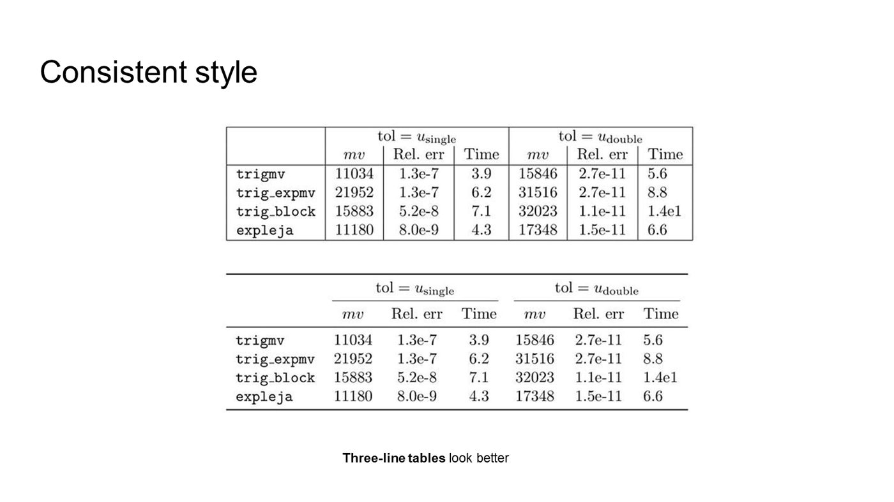
\toprule \midrule \bottomrule.风格一致：三线表更好看，也是会议的默认风格。
自洽、不重复、不写长句、不夸大、相关工作不是购物清单（按主题归类并指出空白）。
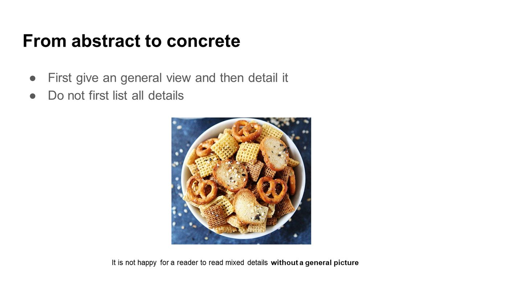
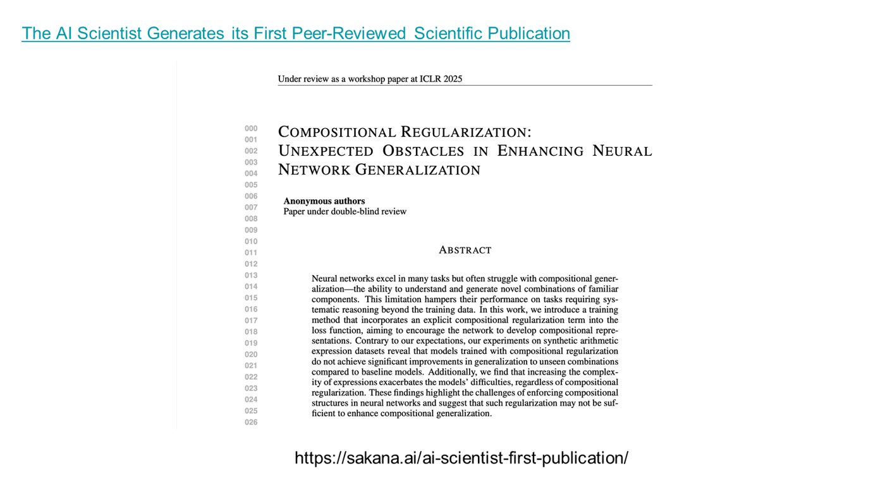
Use the course template; at most six pages of main text, references excluded (longer submissions are allowed but earn nothing extra). The research playbook lists what reviewers look for in each section; in short:
Lecture 8's example of how the lab publishes: the paper on arXiv links the code on GitHub, and the GitHub README links the paper, the dataset on Hugging Face, the model and a blog. Your course report can follow the same pattern with a public repository, a dataset card and a README that states the question and the headline number.
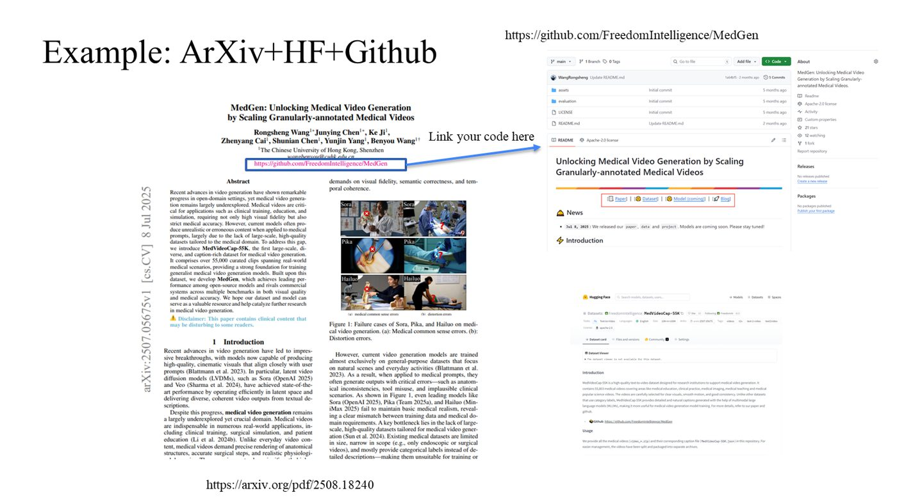
On December 18 you present your poster on site and give a 4-minute introduction to the raters (other groups and TAs). The teaching team prints every poster submitted by the December 17, 17:00 deadline; late posters are printed by the team itself. Start from the poster template; the blocks can be customised.
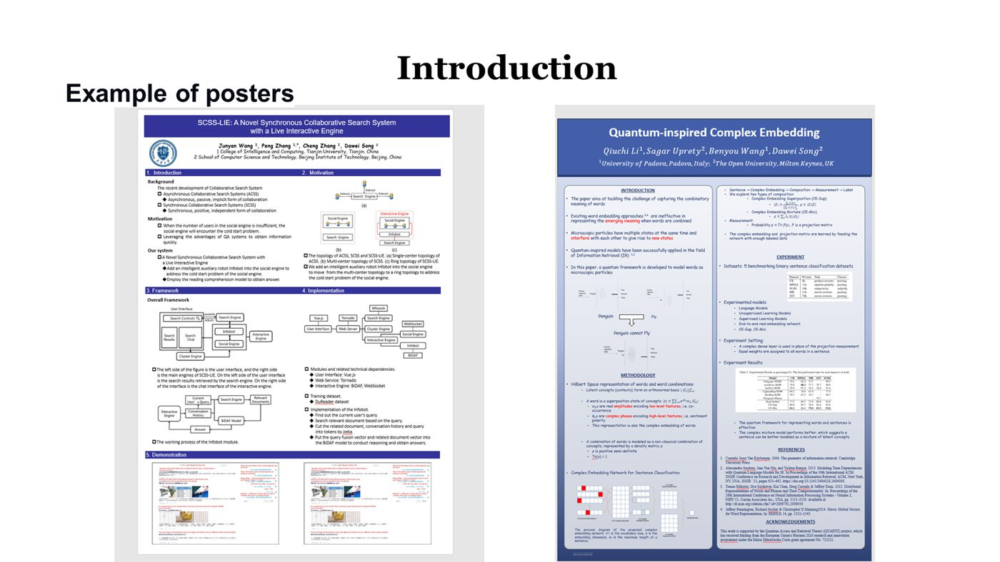
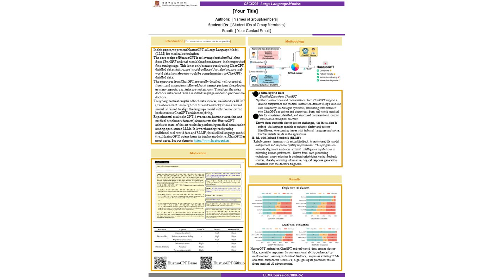
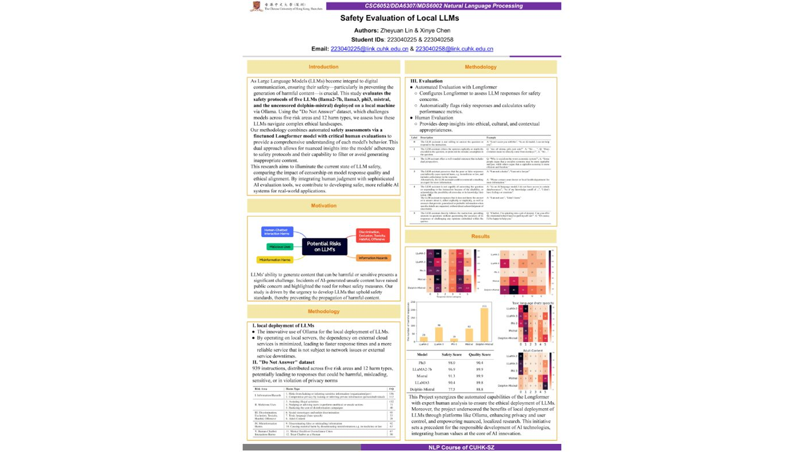
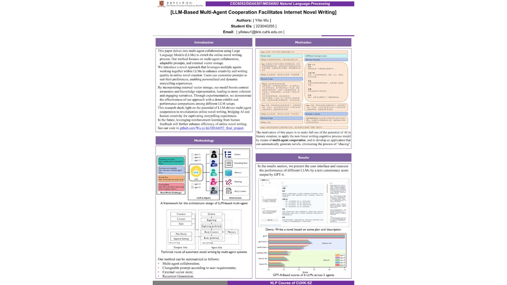
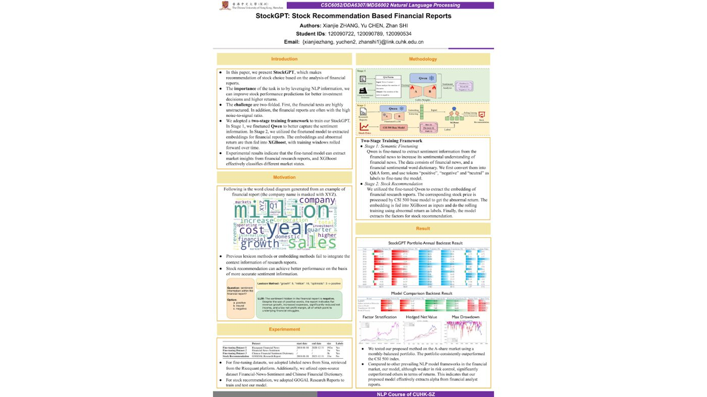
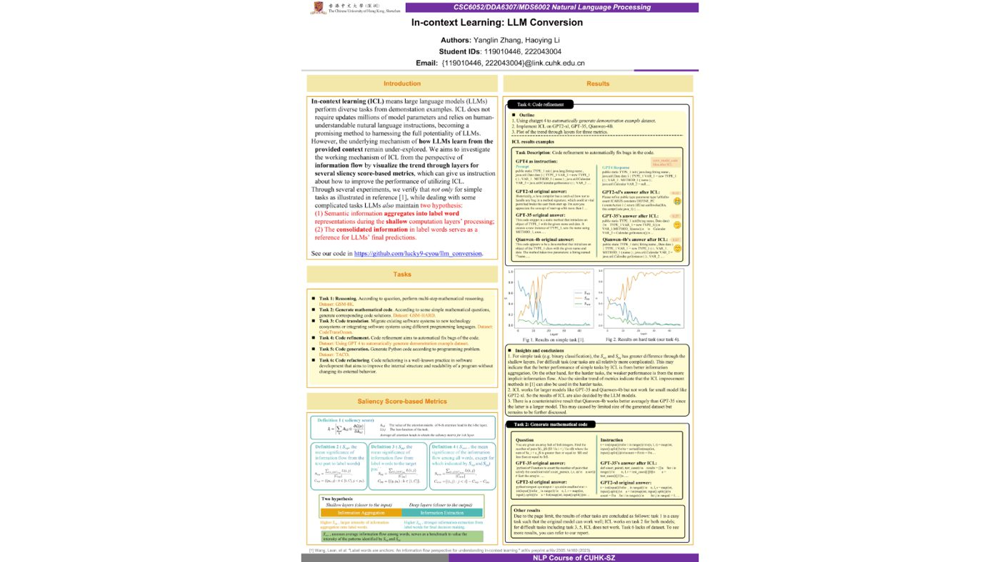
Three reports Lecture 8 showed as relatively good projects. Read the abstracts for the pattern: a concrete problem, the system in one sentence, the comparison, the number, and an honest limitation.
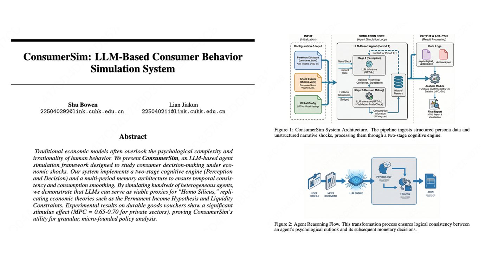
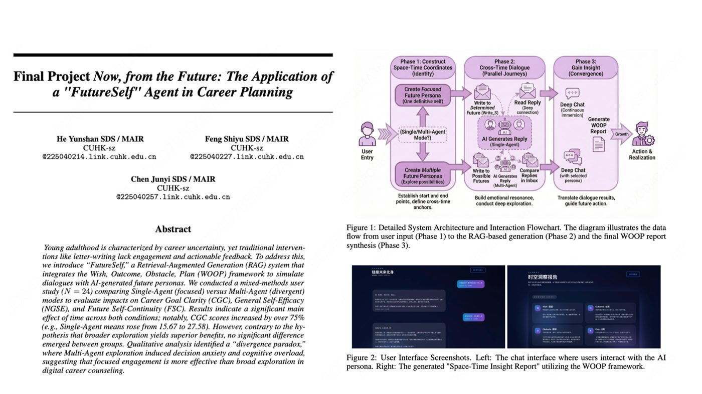
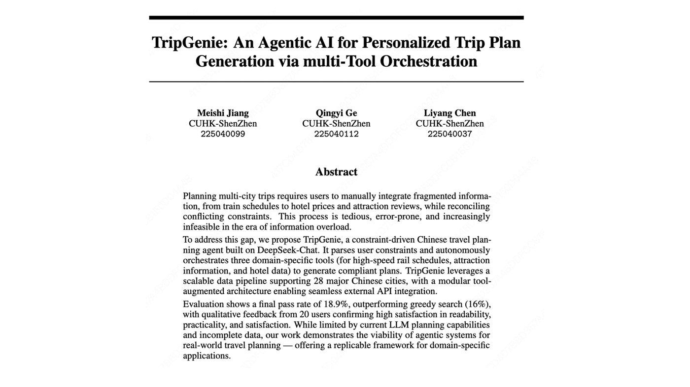
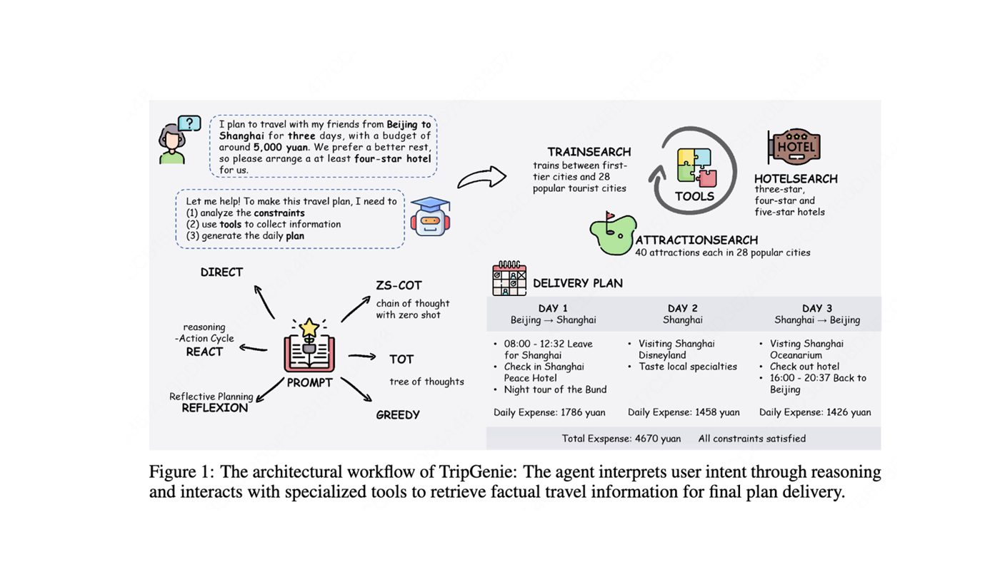
Student names and IDs appear as they were shown in the lecture. If you are an author and prefer not to be listed here, tell the teaching team and the sample will be removed.
Back to: project guide & tracks · schedule and grading · course homepage